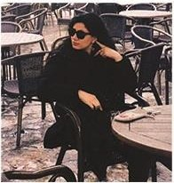
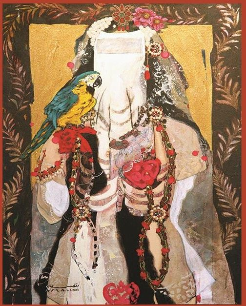
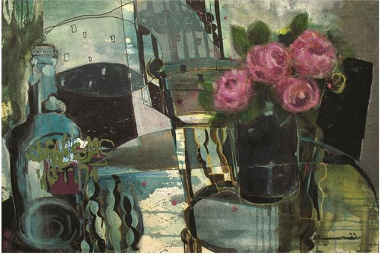
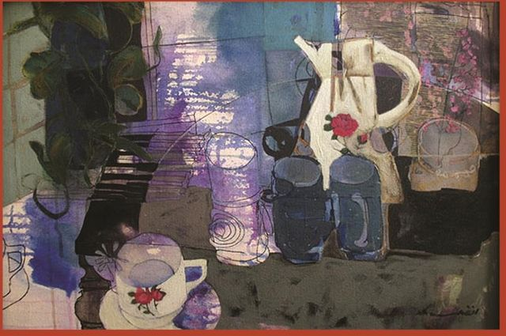
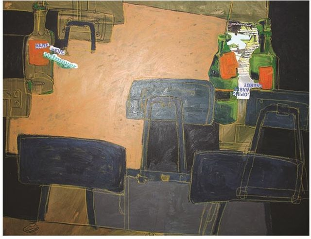
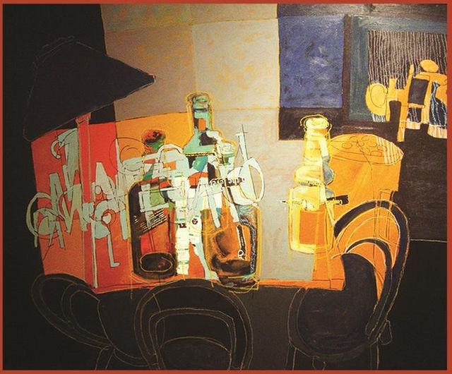

Artist
Tahereh Afzali

- NationalityIranian
- Works6
- Dated2004–2015
- CatalogueContemporary Iranian Art, Tehran 2017
Works6 artworks











History of experienceBiography · education · exhibitions · awards
Education
- 2008M.A in painting from Alzahra University|Tehran – Iran
- 2003B.A in painting from Elmo Farhang University|Tehran – Iran
- Associate member of the Iranian Painters Society
Solo exhibitions
- 2015Atbin Gallery|Tehran – Iran
- 2013Atbin Gallery|Tehran – Iran
- 2007Laleh Gallery|Tehran – Iran
- 2006Honare Iran Gallery|Tehran – Iran
Select group exhibitions
- 2013Igreg Gallery|Tehran – Iran
- 2013Sheila Gallery|Tehran – Iran
- 2013Abra Gallery|California-USA
- 2012"Heart of Iran", CA. state Capital|California-USA
- 2012Saba Gallery|Tehran – Iran
- 2011Artists House Gallery|Tehran – Iran
- 2010Barg Gallery|Tehran – Iran
- 2010Artists House Gallery|Tehran – Iran
- 2010Dey Gallery|Tehran – Iran
- 2009Iranshahr Gallery Café|Tehran – Iran
- 2009Nar Gallery|Tehran – Iran
- 2009"From Past to Tomorrow", Dey Gallery|Tehran – Iran
- 2009Pardis e Mellat Gallery|Tehran – Iran
- 2008Selected in painting exhibition of "New Generation Elected",Homa Gallery|Tehran – Iran
- 2008Kamaledin Behzad Gallery|Tehran – Iran
- 2008Laleh Gallery|Tehran – Iran
- 2008"New Generation Elected", Homa Gallery|Tehran – Iran
- 2007Laleh Gallery|Tehran – Iran
- 2007"New Generation Elected", Homa Gallery|Tehran – Iran
- 2007Saadabad Museum of Fine Arts|Tehran – Iran
- 2006Honored in Third youth Art Festival, Tehran Museum of Contemporary Arts|Tehran – Iran
- 2006Third youth Art Festival, Tehran Museum of Contemporary Arts|Tehran – Iran
- 2006International Painthing Biennial of the Islamic World, Saba Gallery|Tehran – Iran
- 2004International Painthing Biennial of the Islamic World, Saba Gallery|Tehran – Iran
- 2004Laleh Gallery|Tehran – Iran
- 2003Arasbaran Cultural Center|Tehran – Iran
- 2003Niavaran Cultural Center|Tehran – Iran
- 2002Sixth Contemporary Drawing Biennial of Iran, Barg Gallery|Tehran – Iran
- 2001Tehran Univercity|Tehran – Iran
- 1999Naghsh Gallery|Tehran – Iran
Source: the Sobhan Gallery artist catalogue “Sobhan Gallery. C. Tahereh Afzali.pdf”.